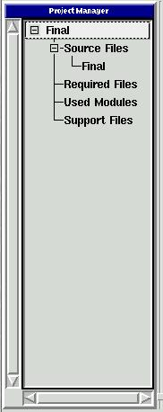
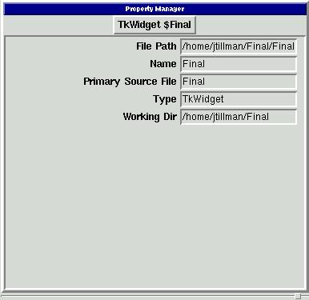
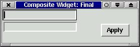
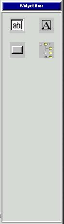

The Guido IDE borrows from many popular IDEs and adds what are hopefully a few new ideas to the mix. The main parts of the Guido IDE should be familiar to anyone who has used a modern GUI application recently. The main parts of the application are the Menu Bar, Tool Bar, and the Plugin Space. Although the Menu Bar, Tool Bar, and the layout of the Plugin Space can be modified through Guido's configuration functions, this discussion will assume that the layout has not been customized. Because the Menu Bar and Toolbar follow standard conventions in GUI design (for the most part), we will concentrate on the Plugin Space and the default Guido plugins that use it.
The Project Manager presents an heirarchical list of the currently open projects and the files that each uses. The files are categorized based on function. It makes extensive use of context-sensitive menus, so right clicking on items in the lists usually provides a menu of possible functions one can perform.

The Project Manager
The Property Manager provides a way to easily view and edit the properties of many types of Guido objects, including projects, GUI forms, and individual widgets. Changes to properties become effective as soon as the focus moves away from the entry field.

The Property Manager
The Form Builder is Guido's default way of visually building a GUI for either an application window or a Tk "mega" widget. The developer uses the Widget Box to add individual widgets to the GUI and the Property Editor to change the properties.

The Form Builder
The Widget Box provides a selection of widgets for adding to a form or widget that is being managed by the Form Builder. Clicking a widget causes it to be added to the GUI. Right clicking on the Widget Box allows one to add and remove items from the Widget Box.

The Widget Box